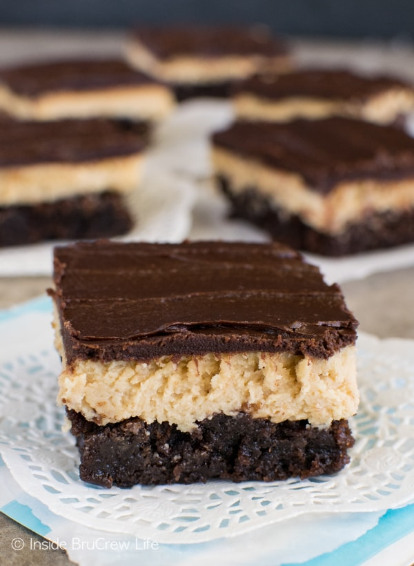

Delicious Dessert Recipes
Have you ever bit into a dessert and become at a loss for words?
We typically try to watch our sugar intake and unfortunately, a few years ago, I also found out that I cannot have gluten.
What that means for us and desserts today - when we eat sweets, we like to make them count!
Here are some of our favorite, melt in your mouth like butter, make you be at a loss for words, dessert recipes:
Gluten Free Gooey Butter Cookies
Ingredients
- 1 1/4 cups gluten free flour (I use better batter)
- 1 tablespoon + 1 teaspoon baking powder
- 1 teaspoon salt
- 1 block of cream cheese, softened
- 1 stick of butter, softened
- 1 1/4 cup granulated sugar
- 1 teaspoon vanilla extract
- 1 large egg
- 1 cup confectioners sugar
Directions
- Mix cream cheese, butter, granulated sugar and vanilla extract.
Mix until batter is light and airy (about 3 minutes.) Add egg and beat until well combined.
Add flour, baking powder and salft. Mix until combined.
- Refrigerate dough for at least one hour.
- Preheat oven to 325°F.
- Line a baking sheet with parchment paper. Add the confectioners sugar to a bowl and set aside.
Scoop the dough into 2-inch balls, then roll each ball in the confectioners sugar before placing them on the baking
sheet.
- Bake cookies until they spread and puff slightly, 12 to 15 minutes. They should be set around
the edges and very soft in the center. Remove the cookies from the oven and let cool five minutes before transferring
from the baking sheet.
Badass Gluten Free Peanut Butter Truffle Brownies

Ingredients - Brownies
- 1 cup butter, melted
- 2 cups granulated sugar
- 3 eggs, beaten
- 1 teaspoon vanilla extract
- 1/2 cup unsweetened cocoa powder
- 1 cup flour
- 1 teaspoon salt
- 1/2 teaspoon baking powder
- 1 cup semi-sweet chocolate chips
Ingredients - Peanut Butter Truffle Filling
- 1/2 cup butter, softened
- 1/2 cup creamy peanut butter
- 2 cups powdered sugar
- 2 teaspoons milk (or more as needed)
Ingredients - Chocolate Peanut Butter Glaze
- 8 ounces semisweet chocolate, coarsley chopped
- 3 tablespoons creamy peanut butter
- 2 tablespoons light corn syrup
- 1/2 cup half and half
Directions
- For the Brownies: Preheat oven to 350°F. Combine melted butter, granulated sugar, eggs
and vanilla extract. Once well combined, blend in cocoa powder. Blend in flour, salt and baking powder. Fold in
chocolate chips. Bake at 350°F for approximately 30 minutes. Let cool before topping with peanut butter topping.
- For the Peanut Butter Truffle Filling: Beat filling ingredients until smooth.
Spread over the brownies.
- For the Chocolate Peanut Butter Glaze: Combine chocolate, peanut butter and corn syrup.
Cook (over a double broiler or microwave slowly) whisking often, until the chocolate is melted and the mixture is smooth.
Remove from the heat and whisk in the half and half, beating until smooth. While still warm, spread over the Peanut Butter
truffle layer.